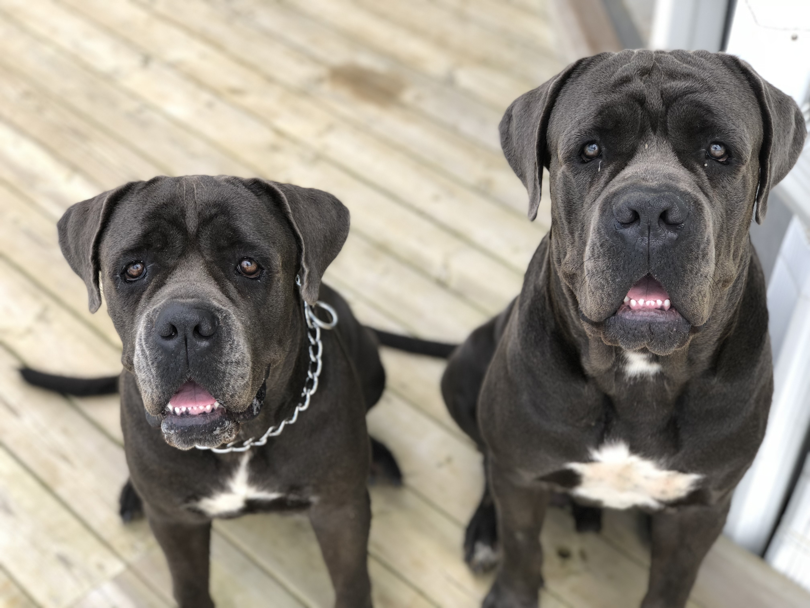

Who am I?
Hello, I am Sara, I am an ESSEC Student and this is my profile where I am going to tell you about me.
Where I come from...
I am from Martinique, I was born here and I have lived there all my life. I have been living in Paris for 4 years now, because I wanted to study in a very good business school. I have a strong cultural bond with west indies, I truly love my island and I would like to live here after my studies.

My hobbies
Formula 1


I am found of Formula 1. I discovered this sport a few years ago and since then I have been a huge fan. I had the amazing opportunity to see a Grand Prix in Barcelone as you can see on the pictures above. I support Lewis Hamilton (and so Mercedes, first because he is the greatest of our era and second because he is the first black pilot in Formula 1 and diversity is an important cause for me. He brings something else than the other drivers in Formula 1 through his celebrity but also all his social fights.
Dogs
I absolutely LOVE dogs, I am a huge dog lover. I actually got two dogs, at my parents house in Martinique. They are both cane corsos, they are respectively 6 and 7 years. You can see them in the pictures above.
Landscapes (in Martinique)


I am passionnate about nature and landscapes. I grew up countryside and I have a need to see trees and grass and just something green where I live or else I do not feel good. I constantly need to have that connection with nature. In Martinique we see very often the kind of landscapes that calms you and makes you want to stop time.
My travels
Thanks to my parents, I have been able to travel a bit. I really love travelling, this is one of the things that I like to do the most. I guess it comes from the fact that I do not like to see or do the same things everyday, I need 'new'. I have lived in Amsterdam for 6months and that experience was incredible, I got to live a different way than I am used to. I met amazing people that I will never forget, I had a really good time.